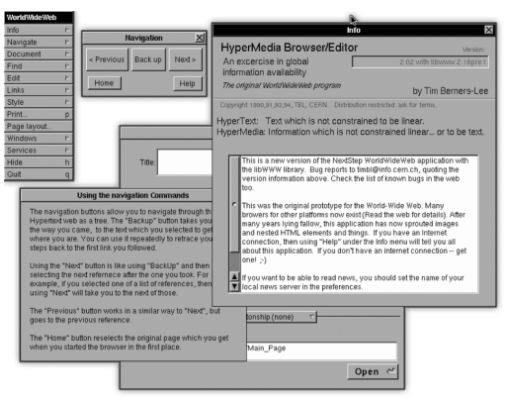
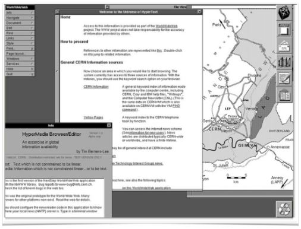
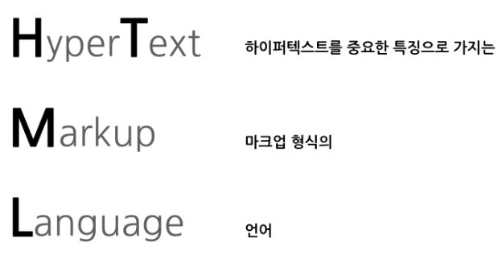

누군가의 이야기는 태어난 곳에서부터 시작을 하죠. HTML의 고향은 어디일까요?
미국이 워낙 IT로 유명하다 보니 HTML의 고향도 미국으로 생각할 수 있는데요.
의외로 HTML의 고향은 아름다운 자연경관으로 유명한 🇨🇭스위스입니다.
스위스에는 유럽 입자 물리 연구소 CERN이라는 저명한 물리학 연구소가 있는데요.
이런 국제적인 연구소에서 1990년도에 역사적인 사건이 발생합니다.
그것은 바로 웹의 등장입니다. 이 웹이라는 서비스를 통해서 HTML이 세상에 드러났습니다.
이 웹이라는 서비스와 HTML을 만든 사람은 웹의 아버지라고 불리는 팀 버너스리입니다.
유럽입자물리연구소는 특성상 한 개별적인 국가의 범위를 넘어서는 연구를 위해 만들어진 곳입니다.
그렇다보니 자연스레 여러 연구자들이 엄청나게 많은 정보와 자료를 주고 받게 되었습니다.
그래서 팀 버너스리가 효율적으로 정보를 주고 받을 수 있는 시스템을 1980년도부터 약 10년동안 연구하다가 1990년도에 결과물들을 세상에 드러내기 시작했습니다.
1990년 10월
세계 최초로 웹페이지를 만드는 에디터를 만듭니다.
1990년 11월
HTML 페이지를 볼 수 있는 세계 최초의 웹브라우저인 World Wide Web을 만듭니다.
1990년 12월
웹서버라는 프로그램을 만들고 그 프로그램이 설치되어있는 컴퓨터에 info.cern.ch라는 주소를 부여합니다.
웹은 여기서 시작합니다.
아직도 info.cern.ch에 들어가면 웹의 시작점을 알리는 HTML 페이지에 여러분도 도달할 수 있습니다. 이 사건이 있었기에 지금 우리가 웹이라는 서비스를 누구나 자유롭게 사용할 수 있게 되었습니다. 그리고 처음에는 단순한 문서였던 HTML은 웹의 폭발적인 성장과 함께 발전하고 있습니다. 이는 HTML에게 CSS와 Javascript라는 언어가 함께 있기 때문에 가능한 것인데요. 셋의 역할은 분명합니다. HTML은 정보의 골격을 나타내고 CSS는 그 정보를 꾸며주고 Javascript는 동작하게 도와주는 것입니다. 이 문장만으로는 쉽게 와닿지 않을 수 있습니다. html-css-js.com에 접속하면 셋의 역할을 재밌게 확인해볼 수 있습니다.
HTML이란 HyperText Markup Language의 약자입니다. 각 단어마다 띄어쓰기가 있기 때문에 단어별로 의미를 나눠서 살펴보도록 하겠습니다.
의미를 이와 같이 나눌 수 있는데요.
풀어서 이야기하면 하이퍼텍스트를 중요한 특징으로 가지는 마크업 형식의 언어라는 것입니다.
웹페이지를 보면 언제나 있는게 있습니다. 세계 최초의 웹페이지에도 있는 것인데요 그것은 바로 링크입니다.
그 링크라고 하는 기능이 하이퍼 텍스트입니다.
그리고 마크업이라고 하는 것은 다음에 나오는 언어와 관련있는데
마크업이라는 문법적인 특성을 가지고 있는 언어라는 뜻입니다.
즉 하이퍼텍스트를 가장 중요한 특징으로 하고 마크업이라는 형식을 가진 언어가 HTML인 것입니다.
위와 같은 문장이 있다고 해봅시다. 이 내용에 태그를 붙임으로써 이 문장이 웹페이지에서 어떤 역할을 하는지 다르게 표현할 수 있습니다.
예를들어 문장의 앞 뒤에 h1이라는 태그를 붙여보도록 하겠습니다. 여기서 h1이라는 것은 제목을 나타내는 태그입니다.
즉 h1 태그를 붙임으로써 이 문장은 해당 웹페이지에서 제목을 나타내는 역할을 가지게 됩니다.
다른 태그를 이용해서 h1과 동일하게 보이게 만드는 방법도 있지만 h1을 사용한다는 것은 해당 내용이 제목이 된다는 정보를 주는 것이기 때문에 구분해서 사용해야 합니다.
이 구조를 좀 더 상세히 살펴보면 앞에 태그를 여는 태그, 뒤에 슬러시와 함께 있는 태그를 닫는 태그라고 합니다.
그리고 태그 사이에 잇는 내용을 콘텐츠라고 하고, 콘텐츠와 태그를 포함한 전체를 한 엘리먼트라고 표현합니다.